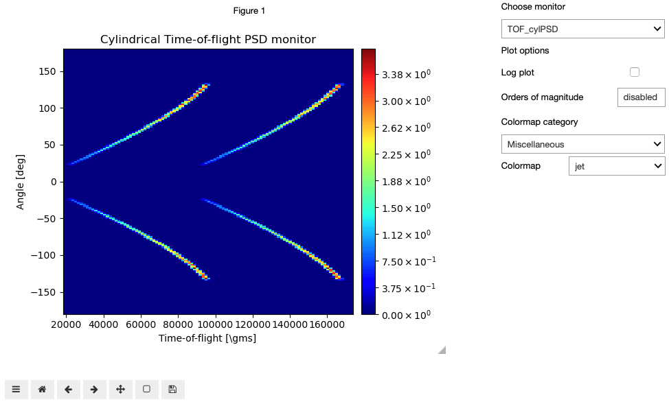
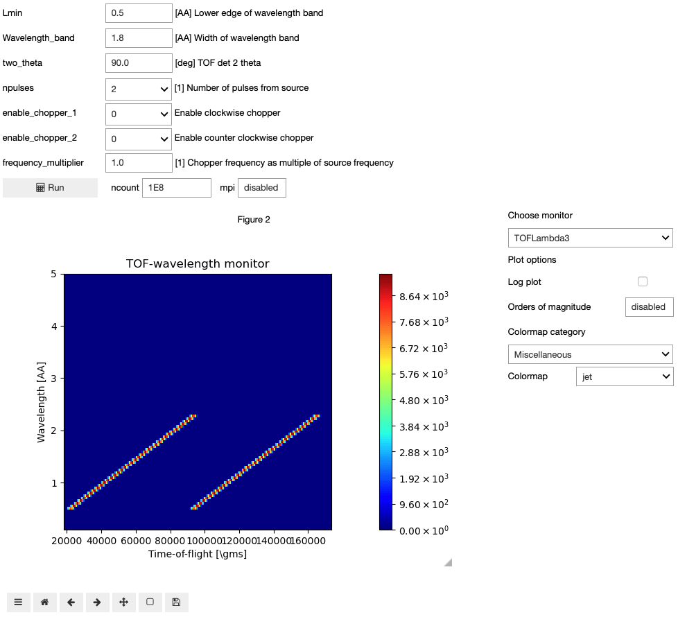
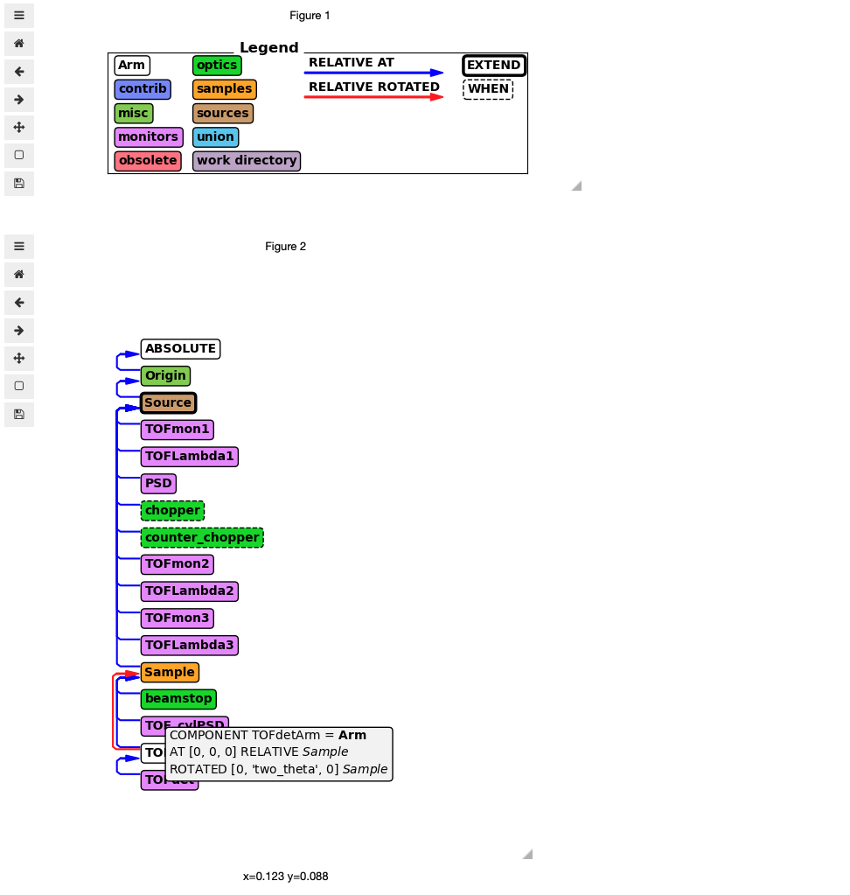

Widgets#
McStasScript includes a few widgets designed for use in Jupyter Notebooks. They are not loaded with the standard import package as they rely on additional dependencies and requires more time to import which is not appropriate for scripts.
import mcstasscript as ms
import mcstasscript.jb_interface as ms_widget
Set up of an example instrument#
As an example we set up a simple model of a time of flight powder diffractometer on a long pulsed source.
instrument = ms.McStas_instr("POWTOF")
instrument.add_parameter("double", "Lmin", value=0.5, comment="[AA] Lower edge of wavelength band")
instrument.add_parameter("double", "Wavelength_band", value=1.8, comment="[AA] Width of wavelength band")
instrument.add_parameter("double", "two_theta", value=90.0, comment="[deg] TOF det 2 theta")
instrument.add_parameter("double", "npulses", value=2.0,
comment="[1] Number of pulses from source",
options=[1, 2, 3, 4, 5, 6])
instrument.add_declare_var("int", "npulses_declare")
instrument.add_declare_var("double", "Lmax")
instrument.add_declare_var("double", "Lcenter")
instrument.append_initialize("npulses_declare=npulses; ")
instrument.append_initialize("Lmax = Lmin + Wavelength_band; ")
instrument.add_declare_var("double", "sample_position", value=160)
Origin = instrument.add_component("Origin", "Progress_bar")
Source = instrument.add_component("Source", "Source_simple")
Source.yheight = 0.03
Source.xwidth = 0.03
Source.dist = "sample_position"
Source.focus_xw = 0.03
Source.focus_yh = 0.03
Source.lambda0 = "Lmin + 0.5*Wavelength_band"
Source.dlambda = "0.5*Wavelength_band"
Source.flux = 1E13
Source.append_EXTEND("double t_between_pulses=1.0/14.0;")
Source.append_EXTEND("double pulse_n=(double) floor(rand01()*npulses_declare);")
Source.append_EXTEND("double pulse_delay=t_between_pulses*pulse_n;")
Source.append_EXTEND("t=2860*rand01()*1E-6 + pulse_delay;")
Source.set_AT(0, RELATIVE=Origin)
instrument.add_declare_var("double", "tmax_source")
instrument.add_declare_var("double", "last_pulse_t")
instrument.append_initialize("last_pulse_t = 1E6*(npulses-1)*1/14.0;")
instrument.append_initialize("tmax_source = 3000 + 1.1*last_pulse_t;")
TOFmon1 = instrument.add_component("TOFmon1", "TOF_monitor")
TOFmon1.nt = 200
TOFmon1.filename = '"TOFmon1"'
TOFmon1.xwidth = 0.02
TOFmon1.yheight = 0.02
TOFmon1.tmin = 0
TOFmon1.tmax = "tmax_source"
TOFmon1.restore_neutron = 1
TOFmon1.set_AT([0, 0, 1e-6], RELATIVE=Source)
TOFLambda1 = instrument.add_component("TOFLambda1", "TOFLambda_monitor")
TOFLambda1.nL = 200
TOFLambda1.nt = 300
TOFLambda1.tmin = 0
TOFLambda1.tmax = "tmax_source"
TOFLambda1.filename = '"TOFLambda1"'
TOFLambda1.xwidth = 0.02
TOFLambda1.yheight = 0.02
TOFLambda1.Lmin = 0.1
TOFLambda1.Lmax = 5
TOFLambda1.restore_neutron = 1
TOFLambda1.set_AT([0, 0, 1e-6], RELATIVE=Source)
PSD = instrument.add_component("PSD", "PSD_monitor")
PSD.filename = '"PSD"'
PSD.xwidth = 0.03
PSD.yheight = 0.03
PSD.set_AT([0, 0, 0.5], RELATIVE=Source)
instrument.add_parameter("double", "enable_chopper_1", value=0,
comment="Enable clockwise chopper", options=[0, 1])
instrument.add_parameter("double", "enable_chopper_2", value=0,
comment="Enable counter clockwise chopper", options=[0, 1])
instrument.add_declare_var("double", "speed")
instrument.add_declare_var("double", "delay")
instrument.add_declare_var("double", "chopper_position", value=6.5)
instrument.append_initialize("Lcenter = Lmin + 0.5*Wavelength_band; ")
instrument.append_initialize("speed = 2.0*PI/Lcenter*K2V; ")
instrument.append_initialize("delay = chopper_position/speed; ")
instrument.append_initialize("delay = delay + 1.340E-3; ")
instrument.add_parameter("frequency_multiplier", value=1,
comment="[1] Chopper frequency as multiple of source frequency")
chopper = instrument.add_component("chopper", "DiskChopper")
chopper.theta_0 = 4.0
chopper.radius = 0.35
chopper.yheight = 0.03
chopper.nu = "frequency_multiplier*14.0"
chopper.delay = "delay"
chopper.set_AT([0, 0, 'chopper_position - 0.01'], RELATIVE=Source)
chopper.set_WHEN("enable_chopper_1 > 0.5")
counter_chopper = instrument.add_component("counter_chopper", "DiskChopper")
counter_chopper.theta_0 = 4.0
counter_chopper.radius = 0.35
counter_chopper.yheight = 0.03
counter_chopper.nu = "-frequency_multiplier*14.0"
counter_chopper.delay = "delay"
counter_chopper.set_AT([0, 0, 'chopper_position - 0.005'], RELATIVE=Source)
counter_chopper.set_WHEN("enable_chopper_2 > 0.5")
instrument.add_declare_var("double", "speed_max")
instrument.append_initialize("speed_max = 2*PI/Lmin*K2V;")
instrument.add_declare_var("double", "speed_min")
instrument.append_initialize("speed_min = 2*PI/Lmax*K2V;")
instrument.add_declare_var("double", "chopper_tmin")
instrument.add_declare_var("double", "chopper_tmax")
instrument.append_initialize("chopper_tmin = 0.9*1E6*chopper_position/speed_max;")
instrument.append_initialize("chopper_tmax = 1.1*1E6*chopper_position/speed_min + tmax_source;")
TOFmon2 = instrument.add_component("TOFmon2", "TOF_monitor")
TOFmon2.nt = 100
TOFmon2.filename = '"TOFmon2"'
TOFmon2.xwidth = 0.02
TOFmon2.yheight = 0.02
TOFmon2.tmin = "chopper_tmin"
TOFmon2.tmax = "chopper_tmax"
TOFmon2.restore_neutron = 1
TOFmon2.set_AT([0, 0, 'chopper_position'], RELATIVE=Source)
TOFLambda2 = instrument.add_component("TOFLambda2", "TOFLambda_monitor")
TOFLambda2.nL = 200
TOFLambda2.nt = 300
TOFLambda2.tmin = "chopper_tmin"
TOFLambda2.tmax = "chopper_tmax"
TOFLambda2.filename = '"TOFLambda2"'
TOFLambda2.xwidth = 0.02
TOFLambda2.yheight = 0.02
TOFLambda2.Lmin = 0.1
TOFLambda2.Lmax = 5
TOFLambda2.restore_neutron = 1
TOFLambda2.set_AT([0, 0, 'chopper_position'], RELATIVE=Source)
instrument.add_declare_var("double", "sample_tmin")
instrument.add_declare_var("double", "sample_tmax")
instrument.append_initialize("sample_tmin = 0.9*1E6*sample_position/speed_max;")
instrument.append_initialize("sample_tmax = 1.1*1E6*sample_position/speed_min + last_pulse_t;")
TOFmon3 = instrument.add_component("TOFmon3", "TOF_monitor")
TOFmon3.nt = 200
TOFmon3.filename = '"TOFmon3"'
TOFmon3.xwidth = 0.02
TOFmon3.yheight = 0.02
TOFmon3.tmin = "sample_tmin"
TOFmon3.tmax = "sample_tmax"
TOFmon3.restore_neutron = 1
TOFmon3.set_AT([0, 0, 'sample_position'], RELATIVE=Source)
TOFLambda3 = instrument.add_component("TOFLambda3", "TOFLambda_monitor")
TOFLambda3.nL = 200
TOFLambda3.nt = 300
TOFLambda3.tmin = "sample_tmin"
TOFLambda3.tmax = "sample_tmax"
TOFLambda3.filename = '"TOFLambda3"'
TOFLambda3.xwidth = 0.02
TOFLambda3.yheight = 0.02
TOFLambda3.Lmin = 0.1
TOFLambda3.Lmax = 5
TOFLambda3.restore_neutron = 1
TOFLambda3.set_AT([0, 0, 'sample_position'], RELATIVE=Source)
Sample = instrument.add_component("Sample", "Powder1")
Sample.radius = 0.003
Sample.yheight = 0.02
Sample.q = 5
Sample.d_phi = 12
Sample.set_AT([0, 0, 'sample_position'], RELATIVE=Source)
beamstop = instrument.add_component("beamstop", "Beamstop")
beamstop.radius = 0.2
beamstop.set_AT([0, 0, 0.5], RELATIVE=Sample)
TOF_cylPSD = instrument.add_component("TOF_cylPSD", "TOF_cylPSD_monitor")
TOF_cylPSD.nt = 200
TOF_cylPSD.nphi = 180
TOF_cylPSD.filename = '"TOF_cylPSD"'
TOF_cylPSD.radius = 2.0
TOF_cylPSD.yheight = 0.20
TOF_cylPSD.tmin = "sample_tmin"
TOF_cylPSD.tmax = "sample_tmax"
TOF_cylPSD.restore_neutron = 1
TOF_cylPSD.set_AT([0, 0, 0], RELATIVE=Sample)
TOFdetArm = instrument.add_component("TOFdetArm", "Arm")
TOFdetArm.set_AT([0, 0, 0], RELATIVE=Sample)
TOFdetArm.set_ROTATED([0, 'two_theta', 0], RELATIVE=Sample)
TOFdet = instrument.add_component("TOFdet", "TOF_monitor")
TOFdet.nt = 100
TOFdet.filename = '"TOFdet"'
TOFdet.xwidth = 0.01
TOFdet.yheight = 0.2
TOFdet.tmin = 70000
TOFdet.tmax = 80000
TOFdet.restore_neutron = 1
TOFdet.set_AT([0, 0, 2.001], RELATIVE=TOFdetArm)
data = instrument.backengine()
INFO: Using directory: "/home/runner/work/McStasScript/McStasScript/docs/source/user_guide/POWTOF"
INFO: Regenerating c-file: POWTOF.c
CFLAGS=
-----------------------------------------------------------
Generating single GPU kernel or single CPU section layout:
-----------------------------------------------------------
Generating GPU/CPU -DFUNNEL layout:
-----------------------------------------------------------
INFO: Recompiling: ./POWTOF.out
lto-wrapper: warning: using serial compilation of 2 LTRANS jobs
lto-wrapper: note: see the '-flto' option documentation for more information
INFO: ===
[POWTOF] Initialize
*** TRACE end ***
Save [POWTOF]
Detector: TOFmon1_I=2.52991e+06 TOFmon1_ERR=3795.87 TOFmon1_N=444210 "TOFmon1.dat"
Detector: TOFLambda1_I=2.52991e+06 TOFLambda1_ERR=3795.87 TOFLambda1_N=444210 "TOFLambda1.dat"
Detector: PSD_I=5.69531e+06 PSD_ERR=5695.31 PSD_N=1e+06 "PSD.dat"
Detector: TOFmon2_I=2.74842e+06 TOFmon2_ERR=3956.4 TOFmon2_N=482576 "TOFmon2.dat"
Detector: TOFLambda2_I=2.74842e+06 TOFLambda2_ERR=3956.4 TOFLambda2_N=482576 "TOFLambda2.dat"
Detector: TOFmon3_I=2.52848e+06 TOFmon3_ERR=3794.8 TOFmon3_N=443958 "TOFmon3.dat"
Detector: TOFLambda3_I=2.52848e+06 TOFLambda3_ERR=3794.8 TOFLambda3_N=443958 "TOFLambda3.dat"
Detector: TOF_cylPSD_I=873.535 TOF_cylPSD_ERR=4.05438 TOF_cylPSD_N=67783 "TOF_cylPSD.dat"
Detector: TOFdet_I=0.666275 TOFdet_ERR=0.107266 TOFdet_N=42 "TOFdet.dat"
Finally [POWTOF: /home/runner/work/McStasScript/McStasScript/docs/source/user_guide/POWTOF]. Time: 0 [s]
INFO: Placing instr file copy POWTOF.instr in dataset /home/runner/work/McStasScript/McStasScript/docs/source/user_guide/POWTOF
INFO: Placing generated c-code copy POWTOF.c in dataset /home/runner/work/McStasScript/McStasScript/docs/source/user_guide/POWTOF
Plotting interface#
The data generated by the above instrument can now be shown in a widget interface. Before launching the interface it is important to choose the widget backend for matplotlib, which is done in the following cell. The show function in ms_widget is then used to display the interface, it just needs the returned data as an argument.
%matplotlib widget
#ms_widget.show(data)
An image of the interface is shown below as the interactive widget is not currently working in the HTML documentation.

In the above interface the left side shows the current plot, and the right side contains a dropdown box for selecting the a new plot and plot options. The log plot checkbox works for both 1D and 2D data, though the remaining options are only applied for 2D datasets.
Simulation interface#
It is also possible to run the simulation from a widget, simply pass an instrument object to the show function.
#ms_widget.show(instrument)
An image of the interface is shown below as the interactive widget is not currently working in the HTML documentation.

The top of the interface contains all input parameters of the instrument. These can be either text fields or dropdown boxes, the latter being the case if options are given to the parameter object. The next elements from the top is the run button, ncount field and mpi field. Pressing the run button starts the simulation, and while it is running, the icon will be an hourglass. Underneath is the plotting interface which will be updated each time a simulation completes.
Interface object#
The show function does not allow the user to retrieve the simulated data. If that is desired one instead have to use the SimInterface class that creates a SimInterface object. This object can be used to show display the interface with show_interface.
sim_interface = ms_widget.SimInterface(instrument)
#sim_interface.show_interface()
Through the SimInterface object it is possible to access data from the last simulation.
data = sim_interface.get_data()
No widget interface initialized, use show_interface method.
Instrument diagram as a widget#
The last widget included in McStasScript is the instrument diagram, though it only behaves in an interactive manner when the matplotlib widget backend is used. As a widget it is possible to get information on each component box by hovering the mouse of the left edge of the box.
#instrument.show_diagram()
An image of the interface is shown below as the interactive widget is not currently working in the HTML documentation.
